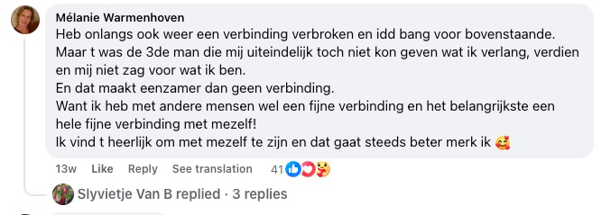
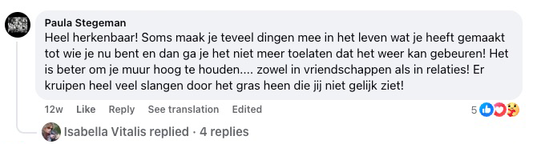
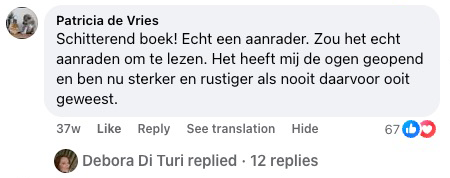
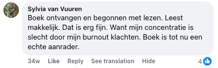
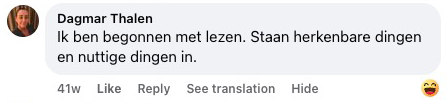
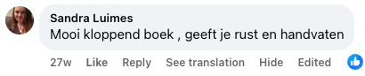

Oppdag den overraskende metoden som hjelper deg å stoppe tankekjøret, roe ned følelsene og finne indre ro — uten selvdestruktive vaner eller å late som om alt er bra når det ikke er det.
Hvis du er lei av å holde fast på smerte som ikke gir deg noe lenger – et knust hjerte som fortsetter å forfølge deg, skyldfølelse du ikke klarer å slippe taket på, eller sinne som holder deg fanget – så gir denne boken deg verktøyene, innsiktene og fremfor alt den lettelsen du har lengtet etter så lenge.

Denne boken er for DEG hvis...
Du har nettopp gått gjennom et brudd og klarer ikke å slutte å tenke på eksen din
du sjekker konstant de sosiale mediene hans/hennes og håper på en melding som aldri kommer
Du blir fortært av skyldfølelse over noe du gjorde eller ikke gjorde
du spiller om og om igjen i hodet ditt hva du burde ha sagt annerledes, og straffer deg selv hver dag
Du får ikke sove om natten fordi tankene bare maler videre
du sovner utmattet, men hodet ditt nekter å slå seg av — og du våkner enda mer sliten
Du føler sinne eller bitterhet mot noen som har såret deg
og selv om du vet at det ødelegger deg, klarer du ikke å slippe taket
Du bærer på smerte fra et svik du aldri har bearbeidet
partneren din, en venn eller familie har sviktet deg — og det såret er fortsatt ikke leget
Du føler deg fanget i fortiden og kommer ikke videre
du lever i minner om det som var, i stedet for i nuet
Du har frykt for å bli forlatt og gjør alt for ikke å miste mennesker
selv om det betyr at du mister deg selv
Du føler tomhet inni deg og vet ikke lenger hvem du er uten den smerten
som om identiteten din har blitt den lidelsen du bærer med deg
9 grunner til at denne boken kan forandre livet ditt
begynn her når du er ferdig med smerten, overtenkingen og det indre kaoset.
- → Slipp taket på et knust hjerte – lær hvordan du gjør smerten fra et brudd eller tap om til styrke og indre ro
- → Slutte å gruble – oppdag praktiske teknikker for å bryte den endeløse malingen i hodet ditt
- → Tilgi uten å glemme – finn balansen mellom å slippe taket og å beskytte deg selv mot gjentatt smerte
- → Emosjonell frihet – bryt løs fra lenkene av sinne, skyld og frykt som har holdt deg fanget i årevis
- → Gjenoppbygg selvtilliten – bygg opp igjen følelsen av egenverd etter en periode med emosjonell skade
- → Sette sunne grenser – lær å si 'nei' uten skyldfølelse og beskytt din indre fred
- → Bearbeide fortiden – slutt å leve i minner og begynn å bygge fremtiden din
- → Sove bedre – ro ned sinnet før du legger deg, og våkn opp uthvilt i stedet for utmattet
- → En ny start – oppdag hvordan du gjør smerten din til din største lærer og bygger et liv du er stolt av

📋 Produktspesifikasjoner
| Tittel | Slipp taket på det som ødelegger deg |
| Forfatter | Joris de Vries |
| Sider | 290 sider |
| Inkludert | Arbeidsbok (praktiske øvelser) |
| Språk | Norsk |
| Format | Paperback |
| Pris | 699 kr |
| Frakt | Gratis (Norge) |
| Garanti | 30 dagers pengene-tilbake |
Denne boken kan være akkurat det du har manglet i livet ditt til nå 💫
Kanskje har du allerede prøvd så mye. Lest bøker som hørtes fine ut, men aldri gikk virkelig i dybden. Prøvd terapeutiske metoder som lovet lettelse, men som i praksis ikke endret noe. Og likevel er du her – fordi du vet innerst inne at det fortsatt er håp. At indre ro er mulig. At smerten du bærer på ikke trenger å vare for alltid.
📘 Slipp taket på det som ødelegger deg er ikke bare en bok som blir stående i hyllen. Det er en praktisk guide av Joris de Vries, skrevet ut fra hans egen erfaring med kronisk grubling, skyldfølelse, frykt og indre kaos. Denne boken hjelper deg med å:
- slutte å straffe deg selv for fortiden,
- bryte spiralen av negative tanker,
- og finne tillit igjen — til deg selv og din egen vei.
Og alt dette på en forståelig, menneskelig måte – uten en eneste klisjé.
💛 Og det er fortsatt ikke alt du får i dag:
- En bok (290 sider) full av praktiske verktøy som faktisk virker
- En arbeidsbok bakerst i boken som hjelper deg å omsette teorien i praksis
- 2 gratis bonus e-bøker (ytterligere 200 ekstra sider) — fordypende materiale for din indre prosess, om relasjoner og overtenking
- Gratis frakt (verdi 79 kr)
- 30 dagers pengene-tilbake-garanti — uten spørsmål, uten risiko
✨ Ta det første steget i dag.
Klikk på knappen nedenfor og bestill ditt eksemplar i dag. Ikke fordi du "må". Men fordi du fortjener å føle deg vel. Uten skyldfølelse. Uten maske. Og endelig — i ditt eget tempo 🌱
MONEY
BACK
Utvidet Pengene-Tilbake-Garanti
30 dager i stedet for 14 dager — ikke fornøyd med boken? Du har fulle 30 dager på å returnere den og få pengene tilbake.
📖 Les et utdrag fra boken. Den inneholder både teori og en arbeidsbok som er tilpasset dine individuelle behov 🎯


Hvis du er sliten av å kjempe mot deg selv...
Hvis du om natten blir forfulgt av det du sa, det du ikke sa, det du mistet eller ødela...
Hvis du fortsatt håper at det kanskje ordner seg, eller at det en dag forsvinner av seg selv – men du sitter fast i hodet ditt og ingenting forandrer seg...
Da er dette den viktigste boken du noensinne kommer til å åpne.
Og her er hvorfor:
Tankene bare raste rundt i hodet mitt – som en endeløs sløyfe som aldri stoppet.
"Hva om jeg hadde sagt det annerledes den gangen?"
"Kanskje hadde vi fortsatt vært sammen."
"Det er alt min skyld."
Hver dag føltes som et repeterende manus – frykt, minner, gjenspillingen av hver samtale, hver stillhet. Og hjemme?
Tomhet. Ikke fysisk, men innvendig.
Jeg var omgitt av ting som minnet meg om det jeg hadde mistet. Og kanskje aldri burde ha sluppet taket på. Jeg prøvde alt: terapi, affirmasjoner, meditasjon, å prate meg selv ut av det...
Men ingenting gikk virkelig i dybden. Ingenting virket. Bare en ny dag... samme smerte... samme spørsmål.
"Hvorfor kommer jeg ikke videre?"
"Hva er galt med meg?"
"Hvorfor fortsetter jeg å håpe?"
Jeg følte at jeg holdt på å miste meg selv.
Og jeg begynte å tvile på om jeg noen gang ville finne indre ro igjen.

Hver dag uten denne boken er en dag lenger innesperret i ditt eget hode.
Hvor mange timer har du allerede kastet bort på å spille om igjen det som skjedde – "Hvis jeg bare hadde gjort det annerledes da..."
Hvor ofte har du ønsket at smerten endelig skulle stoppe?
At det skulle bli stille innvendig?
Hvert minutt uten den rette veiledningen koster deg mer stress enn du fortjener.
Og hver dag du utsetter det, er en dag du blir sittende fast i gammel smerte.
En dag sa jeg til meg selv: "Nok!"
Jeg var lei av å leve i skyggen av smerte, skyld og indre kaos.
Jeg begynte å lete etter svar – og det er nettopp det som førte meg til innsikt som forandret livet mitt for alltid.
Takket være disse prinsippene sluttet jeg å være en fange av mine egne følelser.
Og i stedet for en indre krig, fant jeg endelig den roen jeg hadde lengtet etter i årevis. Hva skjedde da?
Folk rundt meg begynte å merke forandringen.
De spurte:
"Hvordan fikk du det til?"
Og så begynte jeg å dele det som faktisk virker. Ingen teorier. Ingen tomme ord. Bare det som hjelper i ekte øyeblikk av smerte, tap, skyld og sinne.
Resultatet er denne boken. En bok som ikke bare handler om å 'slippe taket', men om å finne deg selv igjen.
Om heling. Og om å slutte å påføre seg selv smerte. Det spiller ingen rolle om du lider under et nylig brudd, et gammelt svik eller årevis av ubearbeidet skyldfølelse – mot deg selv eller noen andre.
Denne boken viser deg hvordan du finner veien tilbake til deg selv.
På din måte.
Uten maske.
Uten press.
Uten skam.
Og vet du hva?
Jeg er ikke den eneste dette virket for.
Både deres og mitt. Mennesker som i årevis ikke hadde klart å slippe taket på smerten sin, begynte plutselig å puste fritt igjen.
De som var fanget i skyldfølelse, så for første gang igjen uten skam i speilet.
Og de som følte seg helt fortapte, fant veien tilbake til seg selv.
Og merk deg – denne tilnærmingen virker så godt, fordi den treffer det som faktisk holder oss fast innvendig.
Fra indre lammelse til sinneutbrudd. Fra ensomhet til å bære en maske.
Fra å ikke klare å tilgi til selvhat. Hvert steg i denne boken er nøye bygget opp for å lede til ekte lettelse – ikke bare litt inspirasjon for noen dager.
Og resultatene?
Akkurat det vi alle lengter etter: lettelse, ro, og følelsen av at du endelig er hjemme igjen – i kroppen din, i hodet ditt og i hjertet ditt.
Og vet du hva?
Jeg kunne ha skrevet en helt egen bok om dette – bare om historiene til mennesker hvis liv ble fullstendig forandret takket være denne tilnærmingen.
For jeg har delt disse metodene med mennesker i alle aldre, fra alle livssituasjoner, og med de mest forskjelligartede indre smerter. Fra de som nettopp hadde gått gjennom et ferskt brudd…
Til de som hadde undertrykt sinne i 20 år. Fra mennesker med angstplager, som var redde for morgenen…
Til de som ikke følte noe lenger innvendig. Og resultatet? En lettelse de ikke engang kunne forestilt seg.
Indre stillhet på et sted hvor det hadde vært skrik hele livet.
En pust uten smerte. Og rom – for nye, milde begynnelser.
Noen "eksperter" spurte meg til og med:
Virker dette virkelig?
Er det ikke litt for enkelt?
Vel…
vi kommer tilbake til det. Men først – la oss se på enda mer bevis for at denne veien faktisk virker.

📚 Lesere over hele Europa fant ro gjennom denne boken – de startet akkurat som deg: slitne, fulle, men klare for forandring ✨
Som om noen sveipet en tryllestav…
Jo flere lesere jeg hørte fra som slet med smerte, tap eller indre kamp, jo tydeligere ble det: disse prinsippene virker overalt.
Jeg følte at denne tilnærmingen var annerledes – men visste først ikke helt hvorfor. Så jeg gikk dypere. Jeg begynte å se mønstre.
Tilbakevendende indre dialoger, forsvarsmekanismer, som gjentok seg om og om igjen.
Jeg testet. Observerte. Reflekterte. Og steg for steg bygget jeg en metode som ikke bare angriper symptomene, men årsaken. Og resultatene?
Folk som trodde de aldri kom til å forandre seg, kjente plutselig en oppriktig lettelse.
De som trodde at "dette er bare hvem jeg er", begynte å vokse igjen.
Og de som følte seg helt fortapte, fant kompasset sitt igjen.
Siden den gang har jeg brukt denne metoden på nesten alle smertepunkter som rammer folk mest:
- Skyldfølelse & skam: Lær hvordan du kan tilgi deg selv og slutte å straffe deg selv for feil i fortiden. I stedet får du kjenne på letthet og egenverd igjen.
- Sinne & bitterhet: Du får verktøy til å slippe taket på gamle sår og slutte å kjempe mot folk i hodet ditt som har såret deg. Ikke for å "gjøre opp regning", men med tilliten til at de ikke lenger styrer deg.
- Følelse av ensomhet: Lær hvordan du kan skape trygghet i deg selv, selv når det ikke er noen rundt deg som forstår. Du vil oppdage at å være alene ikke er det samme som å være tom.
- Konstant grubling: Du slutter å spille "hva om"-scenarier om igjen, og lærer hvordan du stopper tankespiralen før den sluker deg. Sinnet ditt blir igjen et sted for ro, ikke for angst.
- Frykt for tap / å bli forlatt: Oppdag hvordan du takler den dype frykten for å miste noen – uten å gi opp behovet ditt for nærhet eller din egen verdi.
- Fast i fortiden: Lær hvordan du slutter å leve i fortiden – og endelig tar ditt første ekte steg fremover. Ikke bare "la det gå", men virkelig hele innenfra.
Og det virker i enhver situasjon der du prøver å slippe taket på noe som holder deg fast innvendig.
Du kan bruke disse prinsippene i ditt eget liv – og endelig begynne å leve med letthet, ro og tilliten til at du klarer dette.
Dette er ikke teori. Og ikke åndelig tomprat heller.
Det er et praktisk system som hjelper lesere over hele Europa å håndtere skyld, sorg, frykt, sinne og stillstand.
Hvert verktøy i denne boken kommer direkte fra personlig erfaring – formet av år med leting, ekte historier, fall og reise seg igjen.
Og nettopp derfor har jeg bestemt meg for å dele mine innsikter. Slik at du slipper å gå gjennom den samme smerten som jeg gjorde.
De endeløse kveldene der du knekker under dine egne tanker. Den utmattende følelsen av å prøve alt… og ingenting virker.
Den stille fortvilelsen der du tenker:
"Kanskje går dette aldri over."
Men du trenger ikke å bli værende der.
Denne boken viser deg at det finnes en annen vei – og at den er nærmere enn du tror.
Og jeg forstår om du fortsatt tviler. Men ingen fare – om litt forteller jeg deg "hemmeligheten" bak hvorfor jeg deler alt dette… og hvorfor det ikke koster hundrevis av kroner.
Men først – la oss se på…
🇳🇱 Lesere fra Nederland
fant gjenkjennelse i denne boken.
Forståelse er begynnelsen på heling 💡
📌 Offisielle anmeldelser fra Nederland — uten et eneste oppdiktet ord.
Anmeldelsene du ser nedenfor er de offisielle anmeldelsene fra Nederland, der boken først ble utgitt og allerede er lest av tusenvis.
Vi vil ikke lyve. Vi vil ikke finne på falske anmeldelser. Og vi nekter å pynte på noe som helst for å virke mer overbevisende.
Derfor har vi tatt et bevisst valg: vi publiserer anmeldelsene akkurat slik leserne selv har skrevet dem — på originalspråket, uten å oversette, redigere eller endre på et eneste ord. Slik vet du at det du leser er ekte ord fra ekte lesere.
📖 Tips: bruk "See translation"-knappen på hver anmeldelse for å lese dem på norsk.
















Hvem er forfatteren av denne boken?

Jeg heter Joris de Vries. Og denne boken har jeg ikke skrevet fra et elfenbenstårn – men fra det dypeste mørket i livet mitt.
For femten år siden mistet jeg alt jeg kjente.
Forholdet mitt brøt sammen. Selvtilliten min forsvant. Jeg lå våken om natten, fanget i endeløse tankesløyfer. Skyldfølelse fortærte meg innenfra. Jeg visste ikke lenger hvem jeg var, eller hvorfor jeg skulle stå opp om morgenen.
Jeg prøvde alt. Selvhjelpsbøker, podkaster, meditasjons-apper, samtaler med venner. Ingenting traff kjernen.
Helt til jeg innså at jeg selv måtte finne svaret.
Jeg begynte å lese. Ikke én bok, men hundrevis. Om nevrovitenskap, filosofi, psykologi. Jeg reiste, snakket med mennesker som hadde gått gjennom det samme, og begynte sakte å sette puslebitene sammen.
Det tok meg år. År med å falle og reise meg igjen. Med tilbakefall og gjennombrudd. Med tvil og til slutt – frigjøring.
- Selv gått gjennom de dypeste dalene – og funnet veien tilbake
- Mange års selvstudium i nevrovitenskap, filosofi og atferd
- Utviklet en personlig metode som har hjulpet meg og andre
- Samlet alt jeg har lært i denne boken – slik at du slipper å ta den samme omveien
Det jeg oppdaget, forandret livet mitt:
De fleste mennesker lider ikke under det som har hendt dem – men under det de tenker om det.
Den innsikten ble grunnlaget for denne boken.
En kombinasjon av:
- Innsikt fra nevrovitenskapen (hvordan hjernen din saboterer deg)
- Østlig filosofi (kunsten å slippe taket)
- Praktiske øvelser (konkrete steg som virker umiddelbart)
📖 Lesere av Slipp taket på det som ødelegger deg opplever ekte forandring allerede de første ukene — mer ro, klarhet og emosjonell lettelse 🌟


Kanskje er ikke dette den første boken du leser 📖
Og kanskje er det nettopp derfor dette kan være den siste boken du faktisk trenger.
Kanskje har du allerede prøvd alt mulig.
Råd som hørtes fine ut, men som ikke endret noe.
Metoder som virket… helt til det neste tilbakefallet.
Og likevel er du her. Og det betyr noe. Det betyr at du fortsatt ikke har mistet troen.
At du innerst inne fortsatt vet at lettelse er mulig. At ro ikke er en drøm, men en ferdighet. Og at smerten din ikke trenger å være en del av deg for alltid.
📚 Slipp taket på det som ødelegger deg er ikke et plaster — det er et kart. Et kart tilbake til deg selv.
Et kart tilbake til deg selv. Forfatter Joris de Vries deler i denne boken klare, virkningsfulle og menneskelige steg som har hjulpet ham og andre med å:
- slippe taket på skyld og selvbestraffelse,
- bryte sirkelen av grubling og indre stemmer,
- finne tilliten igjen – til seg selv, til livet og til andre.
Forvent ingen luftig åndelig tomprat. Og heller ingen hard psykologi uten medfølelse. Forvent ekthet. Åpenhet. Og lettelse.
✨ Det første steget er lite. Men det kan forandre alt.
Du trenger ikke ha løst alt for å kunne begynne. Du trenger ikke å være sterk – bare åpen for ideen om at det kan være annerledes.
👉 Klikk på knappen og begynn å lese.
Kanskje finner du her den roen du har lett etter hele tiden.
Gratis Frakt
Verdi 79 kr – vi betaler frakten for deg. Du betaler kun for boken – vi tar oss av resten.
🎁 Bonusene under er kun tilgjengelige i dag for bestillinger av Slipp taket på det som ødelegger deg — la ikke denne unike sjansen gå deg forbi! ⏰

🎁 #1 BONUS: E-bok Løsningen på overtenking
Denne eksklusive bonus-e-boken får du gratis når du bestiller i dag. Den inneholder praktiske verktøy og øvelser som passer perfekt sammen med hovedinnholdet.
- Ekstra arbeidsark for dypere selvutforskning
- Daglige øvelser for å omsette teorien i praksis
- Eksklusiv bonusinnsikt du ikke finner andre steder
- Last ned umiddelbart etter bestillingen

🎁 #2 BONUS: E-bok Kjærlighet uten tull
Sannheten om forhold som ingen tør å snakke om. Slutt å være folkepleaser. Slutt å miste deg selv i et forhold som tapper deg, gjør vondt og knuser deg sakte. Få tilbake din styrke, klarhet og evne til å velge det du vil – ikke det andre forventer av deg.
Dette er ingen feel-good guide om kommunikasjon. Denne boken er en konfrontasjon med deg selv. Hvorfor du er der du er. Og hva du må gjøre for å bryte ut.
Føler du at noe ikke stemmer i forholdet ditt? Tviler du på om det er deg – eller den andre? Har du mistet forbindelsen, tiltrekningen eller deg selv? Denne boken knuser illusjonene dine. Og hjelper deg å reise deg igjen.
- Oppdag dine mønstre av selvdestruksjon og lær å håndtere dem
- Få grep om følelsene dine, frykten din og reaksjonene dine
- Forstå hva ekte hengivenhet betyr – og når det er på tide å gå
- Ta fullt ansvar og skap et forhold som faktisk virker
- Ikke vent på at den andre skal forandre seg. Forandre deg selv — og alt forandrer seg med deg
Kanskje lurer du nå – "Hvorfor skulle jeg bruke penger på denne boken?" 🤔📘 Svaret er enkelt:
Du har 30 dager til å prøve den — liker du den ikke? Da får du pengene tilbake.
Ingen spørsmål, ingen styr. Men vi vet begge at du ikke kommer til å sende den tilbake. For så snart du begynner å lese, kommer du til å føle at denne boken kan forandre livet ditt.
Hva gjør denne boken annerledes:
- Praktisk anvendbarhet — Denne boken gir deg ikke bare innsikt, men også konkrete steg du kan bruke i hverdagen din med en gang.
- Basert på erfaring — Metodene kommer fra personlig erfaring og mange års selvstudium, slik at du vet at du lærer ærlige, utprøvde verktøy.
- Fokus på dyp heling — I motsetning til andre bøker retter denne boken seg mot kjernen av din emosjonelle bagasje, ikke bare overflatiske symptomer.
- Emosjonell forbindelse — Boken er skrevet med empati og forståelse, slik at du føler deg hørt og støttet på reisen mot indre ro.
- Unik innsikt — Denne boken byr på overraskende perspektiver du ikke finner andre steder, slik at du kan se på deg selv og følelsene dine på en helt ny måte.
En bok du leser i ditt eget tempo
Ingen hastverk, ingen press. Begynn når du er klar, og ta den tiden du trenger.
Praktiske verktøy for hverdagen
Med konkrete øvelser og en arbeidsbok kan du komme i gang med en gang — steg for steg, i ditt eget tempo.
Du fortjener å være fri
Å slippe taket er ikke svakhet — det er styrke. Denne boken hjelper deg å skape rom for det som gjør deg virkelig lykkelig.
📦✨ Klar til å begynne? Bestill i dag og få den komplette pakken levert hjem til deg 📘🙏
Din reise mot indre ro begynner her.
📘 Du får denne komplette bokpakken for kun 699 kr — mindre enn en middag for to eller en full tank bensin.
Men i motsetning til de tingene gir denne boken deg livslang verdi. 💎💚
Den hjelper deg å finne indre ro, slippe taket på smerte du har båret på i årevis, og kjenne på at du er hjemme i deg selv igjen. ❤️
Takket være denne lille investeringen får du tilgang til praktiske verktøy du kan bruke i mange år — når du trenger dem, i ditt eget tempo. 💶🌱
❓ Spørsmål som ofte stilles 💬
Virker det egentlig? Er ikke dette bare nok en tom selvhjelpsbok?
Jeg forstår tvilen din helt. "Slipp taket på det som ødelegger deg" er ingen typisk selvhjelpsbok full av vage råd eller pene sitater. Den er basert på personlig erfaring og mange års selvstudium i nevrovitenskap, filosofi og atferd. Joris de Vries utviklet disse teknikkene etter at han selv gikk gjennom en dyp dal og fant veien tilbake. Forskjellen ligger i de praktiske, konkrete stegene som faktisk virker – også når du føler deg på bunnen. Og med vår 30 dagers pengene-tilbake-garanti tar du absolutt ingen risiko.
Jeg har allerede prøvd så mye, hvorfor skulle dette være annerledes?
Det er forståelig at du er skeptisk – det er frustrerende å investere tid og håp i ulike metoder som til slutt ikke gir ekte forandring. Det som gjør denne boken annerledes, er den direkte, praktiske tilnærmingen som er basert på personlig erfaring, ikke på tørr teori. Boken ble til ut fra forfatterens ekte historie, en som også tidligere hadde prøvd "alt", men til slutt fant lettelse takket være sin egen metode. I motsetning til generelle råd får du her konkrete teknikker som også virker i øyeblikkene du føler deg utmattet. Og skulle boken likevel ikke fungere for deg, kan du prøve den helt risikofritt takket være vår 30 dagers pengene-tilbake-garanti.
Hva om det ikke virker for meg? Min situasjon er annerledes eller mer kompleks.
Hvert menneske er unikt og bærer på sin egen historie. Nettopp derfor er "Slipp taket på det som ødelegger deg" laget for å tilby fleksible tilnærminger som kan tilpasses ulike situasjoner og kompleksitetsnivåer – fra nylige brudd til årevis av ubearbeidet smerte. Arbeidsboken i boken gjør at du kan bruke metodene på dine spesifikke omstendigheter. Lesere med de mest forskjellige historiene – fra sorgbearbeiding til skyldfølelse, fra sinne til uro – har allerede hatt nytte av denne boken. Og husk: vi tilbyr 30 dagers pengene-tilbake-garanti uten vanskelige spørsmål.
Er 699 kr for mye for en bok?
Du får en komplett pakke – ikke bare en bok på 290 sider med en praktisk arbeidsbok, men også to verdifulle bonus-e-bøker med totalt 200 ekstra sider ("Løsningen på overtenking" og "Kjærlighet uten tull"), pluss gratis frakt til en verdi av 79 kr. Mange lesere har fortalt oss at én enkelt innsikt fra boken har spart dem for mye tid og energi. For prisen av en kveld ute får du verktøy du kan bruke i mange år. Og med vår 30 dagers pengene-tilbake-garanti tar du absolutt ingen risiko.
Burde jeg ikke heller investere i en terapeut enn i en bok?
Terapi og denne boken utelukker hverandre slett ikke – de kan tvert imot styrke hverandre. Mange bruker denne boken som første steg på veien mot bedring, eller bruker den ved siden av terapi for dypere forståelse og for å øve mellom timene. For en brøkdel av kostnaden for noen få terapitimer får du verktøy du kan bruke når du trenger dem – midt på natten, i ditt eget hjems trygghet, i ditt eget tempo. Du kan komme i gang umiddelbart, uten ventelister. Skulle du senere trenge personlig veiledning, gir denne boken deg et solid grunnlag som gjør at du kan dra mye mer nytte av terapien.
Hvem er Joris de Vries? Kan jeg stole på ham?
Joris de Vries er en forfatter som selv gikk gjennom en dyp personlig dal – og kom sterkere ut av den. Etter mange års selvstudium i nevrovitenskap, filosofi og atferd utviklet han en praktisk metode som hjalp ham å slippe taket på det som ødela ham. Metodene i denne boken er ikke teoretiske – de er sprunget ut av ekte personlig erfaring. Hans tilnærming kombinerer innsikt fra ulike disipliner, oversatt til tilgjengelige teknikker alle kan bruke. Du kan prøve hans arbeidsmåte risikofritt takket være vår fulle 30 dagers pengene-tilbake-garanti.
Hvorfor selges ikke denne boken på Norli, Adlibris eller i bokhandelen?
Vi har bevisst valgt direktesalg for å gi deg den beste opplevelsen. Dette gjør at vi kan legge til verdifulle bonuser (to ekstra e-bøker til en verdi av over 600 kr), tilby gratis frakt, og gi en personlig 30 dagers pengene-tilbake-garanti – ting som er umulig via store plattformer som tar 40–60 % provisjon. I tillegg kan vi dermed gi direkte kundeservice og svare raskt på spørsmålene dine. Du får mer verdi for pengene, og vi kan bygge et direkte forhold til deg.
Er boken også tilgjengelig som e-bok?
Ja, boken er også tilgjengelig som digital PDF-versjon. Klikk på knappen "Kjøp den digitale versjonen her" øverst på siden. Du kan laste ned PDF-en umiddelbart etter betaling og lese den på hvilken som helst enhet – datamaskin, nettbrett eller telefon. Den inneholder nøyaktig samme innhold som den trykte boken, inkludert alle øvelser og arbeidsark du kan skrive ut. Perfekt hvis du vil komme i gang med en gang eller foretrekker å lese digitalt.
Hvor lang tid tar det før jeg får boken?
Boken din leveres innen omtrent 5 virkedager etter at vi har mottatt bestillingen din. Vi sender vanligvis innen 24–48 timer, hvoretter den går rett til deg – helt gratis, fordi frakt- og pakkekostnader er inkludert i prisen. Etter sending mottar du en bekreftelses-e-post med sporingsinformasjon. Skulle leveringen av en eller annen grunn ta lengre tid, ta gjerne kontakt med oss via bok@slipptaketboken.no, så undersøker vi saken umiddelbart. Vil du komme raskere i gang? Velg den digitale versjonen som du kan laste ned med en gang.
Hvem er denne boken for? Passer den til min situasjon?
Denne boken er for alle som sliter med emosjonell byrde – enten det handler om smerte etter et brudd, skyldfølelse som fortsetter å forfølge deg, sinne du ikke klarer å slippe taket på, kronisk grubling, frykt for å bli forlatt, eller følelsen av å være helt fortapt. Den er skrevet for mennesker i alle slags livssituasjoner: fra de som nylig har opplevd tap til de som har båret på uløst smerte i årevis. Boken er bevisst skrevet uten faguttrykk, slik at den er tilgjengelig for alle. Metodene kan du tilpasse dine individuelle behov takket være den praktiske arbeidsboken som følger med.
Er 30 dagers pengene-tilbake-garantien virkelig uten styr?
Absolutt. Hvis du innen 30 dager ikke opplever forbedring eller av en eller annen grunn ikke er fornøyd, får du hele beløpet tilbake. Du trenger bare å sende boken tilbake i 100 % perfekt stand, og så snart vi har mottatt den, behandler vi tilbakebetalingen umiddelbart. Ingen kompliserte skjemaer, ingen plagsomme spørsmål om hvorfor det ikke virket, ingen styr. Send en e-post til bok@slipptaketboken.no, så ordner vi alt for deg. Vi gjør dette fordi vi har full tillit til verdien av denne boken, og vi vil at du skal kunne prøve den uten bekymringer. Din tilfredshet og ditt velvære er viktigere enn salget.
Hvordan vet jeg om denne boken virkelig vil hjelpe meg?
Hvert menneske er forskjellig, og vi kan ikke love spesifikke resultater. Det vi kan si: boken byr på konkrete øvelser og en arbeidsbok du kan komme i gang med umiddelbart. Lesere forteller oss regelmessig at den praktiske tilnærmingen virkelig har hjulpet dem. Du kan lese anmeldelsene på denne siden for å få et inntrykk. Og det aller viktigste: med vår 30 dagers pengene-tilbake-garanti tar du ingen risiko. Virker det ikke for deg? Da får du pengene tilbake.
Er betalingen min trygg? Kan jeg stole på dette selskapet?
Betalingen din er fullt sikret. Betalingen autoriseres av pålitelige tjenester som Visa, Mastercard, Klarna, PayPal og Trustly. Alle disse selskapene sørger for at betalingen er trygg, rask og rettferdig for begge parter. Vi bruker betalingsleverandører som oppfyller de høyeste sikkerhetsstandardene (SSL-kryptering og PCI-DSS-samsvar). Dine finansielle opplysninger lagres aldri av oss – alt behandles direkte og sikkert av betalingsleverandøren. Vi er et registrert selskap (Performance Marketing Solution s.r.o., org.nr.: 06259928) med transparente vilkår og personvernerklæring. I tillegg tilbyr vi full kundeservice via bok@slipptaketboken.no. Og husk: med vår 30 dagers pengene-tilbake-garanti tar du uansett ingen finansiell risiko.